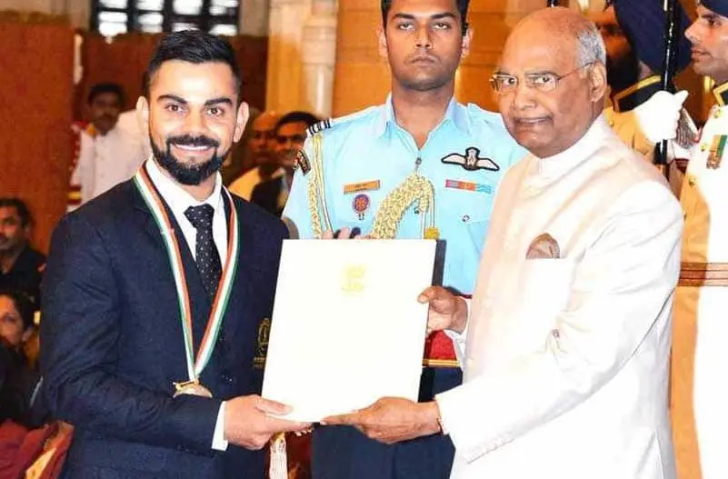
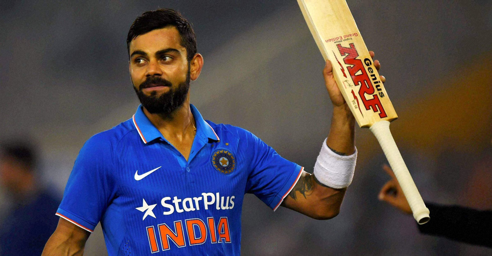
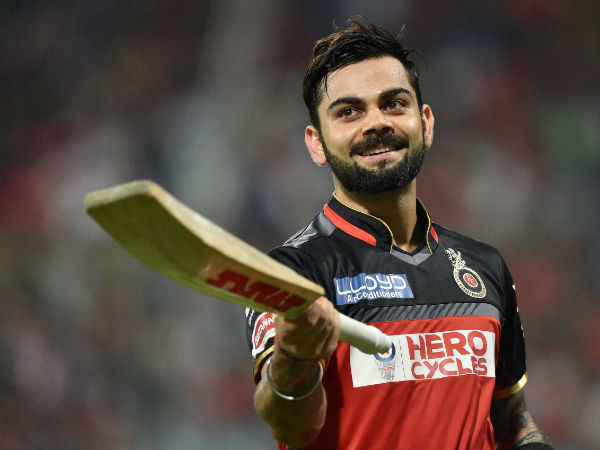
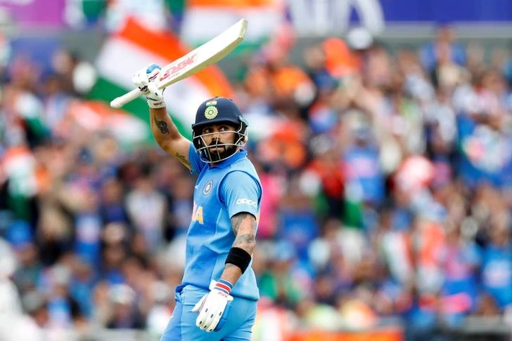

* Virat Kohli born 5 November 1988 is an Indian cricketer and the current captain of the India national team. A right-handed top-order batsman, Kohli is regarded as one of the best contemporary batsmen in the world.He plays for Delhi in domestic cricket and for Royal Challengers Bangalore in the Indian Premier League (IPL) as captain of the franchise since 2013..
*Kohli captained India Under-19s to victory at the 2008 Under-19 World Cup in Malaysia. After a few months later, he made his ODI debut for India against Sri Lanka at the age of 19. Initially having played as a reserve batsman in the Indian team, he soon established himself as a regular in the ODI middle-order and was part of the squad that won the 2011 World Cup. He made his Test debut in 2011 and shrugged off the tag of "ODI specialist" by 2013 with Test hundreds in Australia and South Africa.[4] Having reached the number one spot in the ICC rankings for ODI batsmen for the first time in 2013,[5] Kohli also found success in the Twenty20 for mat, winning the Man of the Tournament twice at the ICC World Twenty20 (in 2014 and 2016).
Virat Kohli Achievements
Arjuna (2013) & Padma Shri Awardee (2017)

Virat Kohli has been bestowed upon the Arjuna Award, the most prestigious sports award in India. Apart from that, the Indian skipper also has the fourth highest civilian award of India, Padma Shri. He won these two awards in the year of 2013 and 2017 respectively for his tremendous contribution to Indian cricket.
Fastest to 2,000 Runs in T20Is

Kohli is not considered to be an explosive batsman in T20s, but his numbers suggest a different story. In June 2017, Virat Kohli became the fastest batsman to score 2,000 runs in T20Is. He reached this milestone during the match against England. He was also the fastest to 1,000 runs till Pakistan’s Babar Azam broke this record..
Most Runs in a single IPL Edition (2016)

In 2016, Virat Kohli was in a different zone, and something similar was seen in Indian Premier League as well. Virat Kohli amassed 973 runs in that edition of IPL and almost took his team over the line during finals. He also had four centuries to his name at the end of 2018 IPL. This became one of the biggest reasons why RCB reached the ultimate stage.
First Indian Captain to win a Test series in Australia

The Indian Team has been touring Australia for many years but could not win a Test series. It was under the captaincy of Virat Kohli during the 2018-19 Border-Gavaskar Trophy, when India was able to do so. The series scoreline read as 2-1 at the end and India created history with that. The credit was majorly given to the pace attack of the Indian team. However, Virat Kohli's contribution as a captain can also not be taken away that he put.
More than 20,000 runs in a Decade

Virat Kohli has been bestowed upon the Arjuna Award, the most prestigious sports award in India. Apart from that, the Indian skipper also has the fourth highest civilian award of India, Padma Shri. He won these two awards in the year of 2013 and 2017 respectively for his tremendous contribution to Indian cricket.